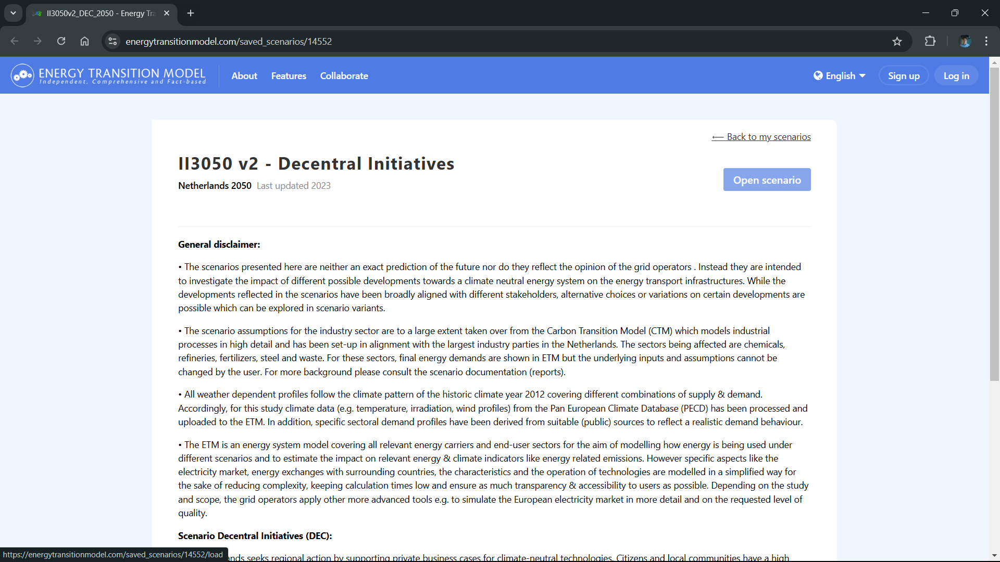
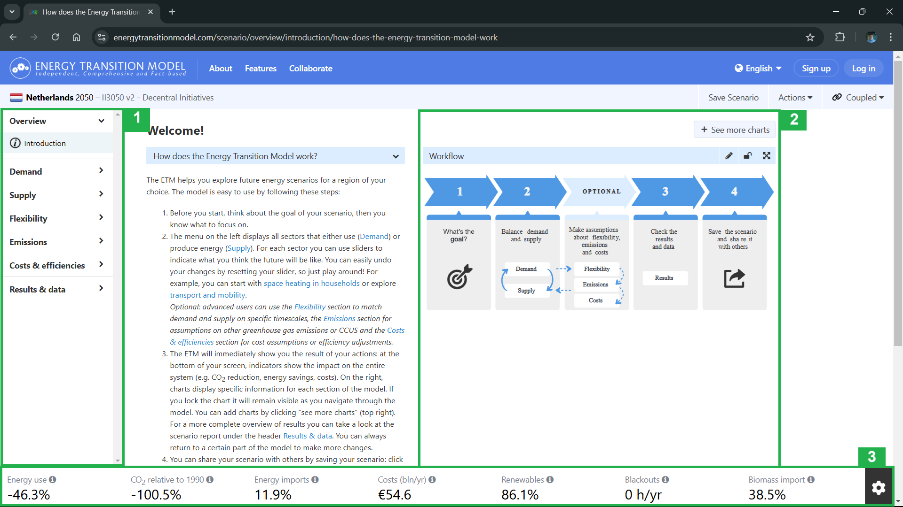
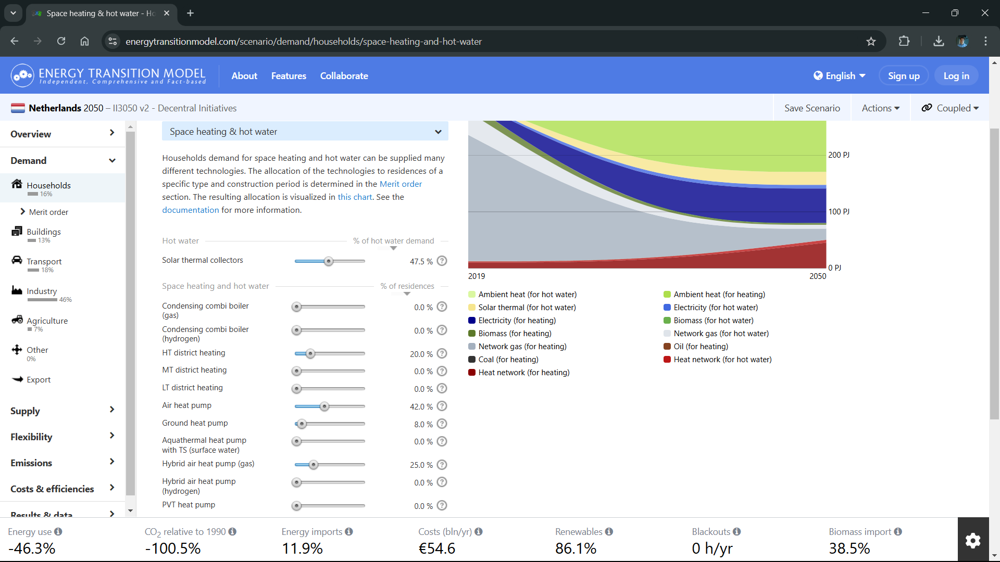
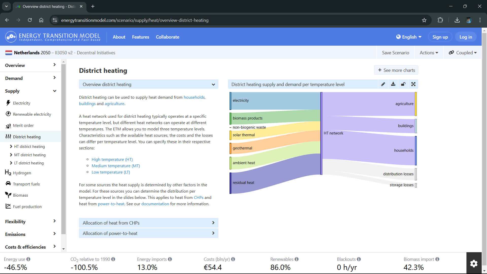
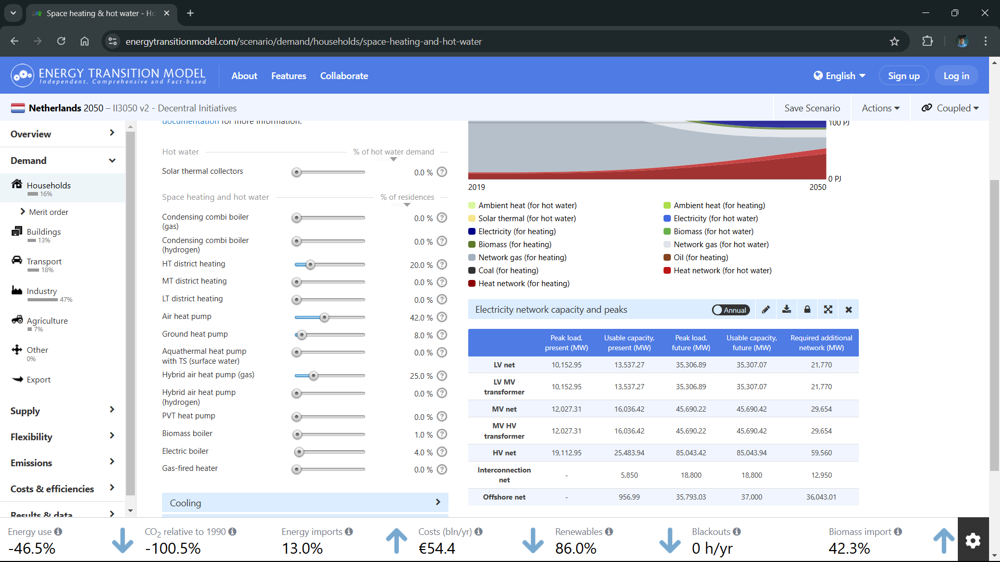
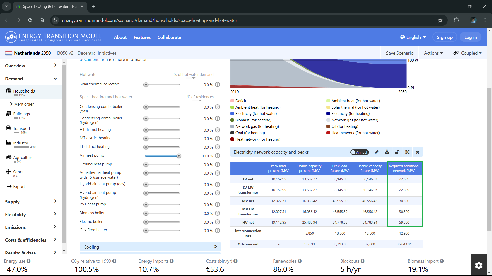
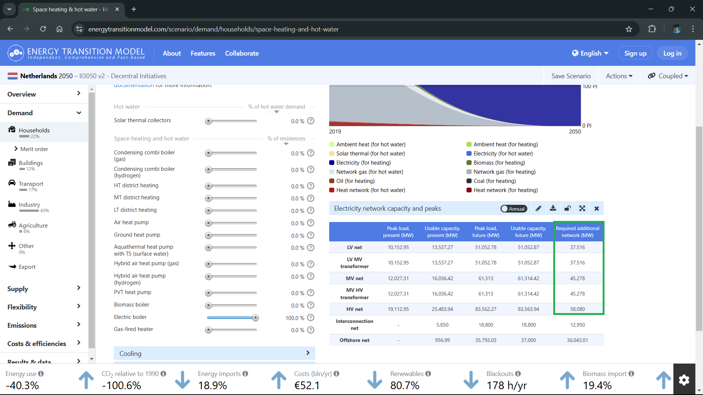
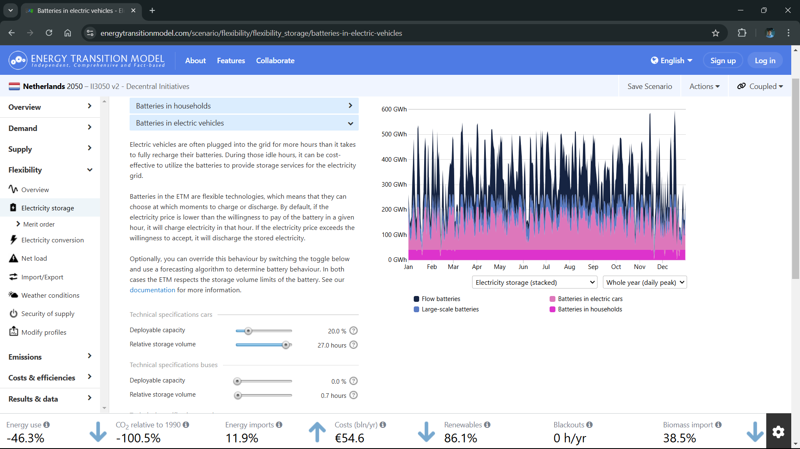
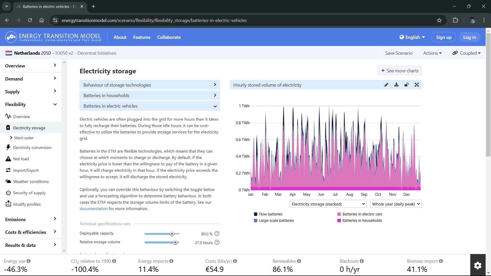
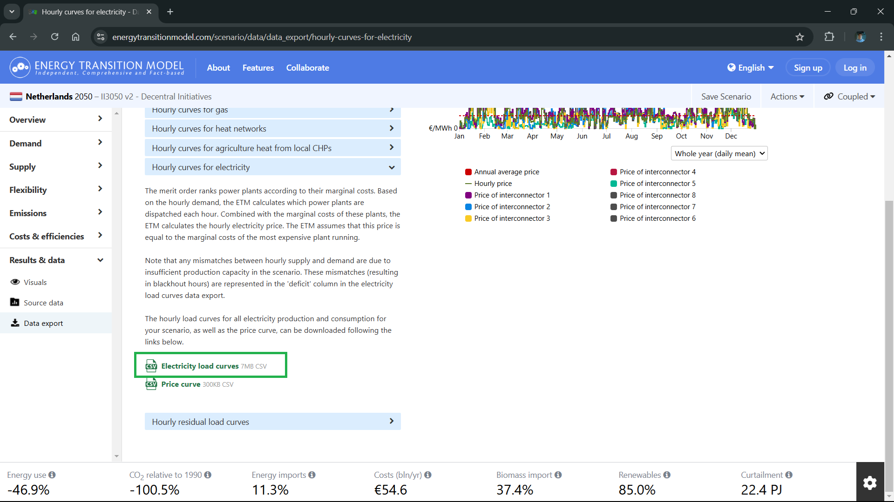

Tutorial 2: Energy System Scenario Modelling#
In this tutorial chapter, we will explore how to make specific changes to base scenarios in the Energy Transition Model (ETM), a comprehensive tool for energy system modeling.
Learning objectives#
Understand the ETM interface and its key components
Learn to modify existing scenarios in the ETM
Explore the II3050 Decentral Incentives scenario for the Netherlands in 2050
Note
In this tutorial, we will make intentionally significant changes to the scenario to clearly demonstrate the model’s behavior and the relationships between different parameters. In real-world applications, scenario modifications typically involve more nuanced adjustments based on detailed analysis and sector-specific knowledge.
Context and background#
We use the ETM to model demand scenarios that we later soft-couple to our optimisation model. The ETM is particularly relevant as it’s used by grid operators to define the scenarios for the Integral Grid Outlook (II3050) at the Dutch national level. For European-scale modeling, the Ten Year Network Development Plan (TYNDP) scenarios, defined by ENTSO-e and ENTSO-g, are also available through the North Sea Wind Power Hub (NSWPH) research initiative.
Starting the scenario#
Click on the Open scenario button to access the Decentral Incentives scenario, one of the II3050 scenarios for the horizon year 2050.
Note
When opening a predefined (saved) scenario, a session scenario is created. This session scenario is your personal copy with all original settings. You can freely make changes, but saving them requires creating an account.

Note
Scenario Background: The Decentral Incentives scenario represents a future where:
The Netherlands embraces decentralized climate action
Local communities and private initiatives drive the energy transition
Citizen-led projects lead renewable energy adoption
Traditional heavy industry sees decline
Heating solutions become diverse and localized, ranging from heat pumps to green hydrogen
Overview of the ETM interface#
Below is a comprehensive overview of the main interface elements in the ETM.

2. Chart display#
The chart element shows relevant visualizations based on your selected categories. Features include:
Chart locking via the top-right lock icon
Additional charts through the
+ See more chartsbuttonDynamic updates based on scenario modifications
3. Dashboard overview#
The dashboard displays key performance indicators (KPIs) including:
CO2 reduction
Energy use reduction
Cost metrics
Customize the visible KPIs using the settings wheel in the black button on the dashboard’s right side.
Note
The ETM generates all results on demand. Any input change or view modification triggers a model run, typically taking 3-7 seconds to update. For more details about the ETM’s architecture, consult the documentation.
Now, let use make some changes to the scenario. As we use the ETM to model the demand we will use as input for our optimisation model, we focus on demand categories for now.
Modifying household heating parameters#
Navigate to Demand > Households > Space heating & hot water. In the base scenario, solar thermal plays a significant role in hot water generation, producing 22 PJ in 2050. Let’s examine how this assumption affects both renewability and grid requirements.

When we adjust the solar thermal slider to 0%, we observe:
A modest 0.1% decrease in overall renewability
A notable increase in biomass imports
Changes in heat network supply composition
The increase in biomass imports appears to be related to the high proportion of heating networks, which partially rely on biomass as an energy source.

To analyze the impact on the electricity network:
Click the
+ See more chartsbutton in the top-right cornerSearch for
Electricity network capacity and peaksAdd the chart and use the lock icon to keep it visible
The network capacity table should now appear in your chart section
From this we observe that the required additional network capacity at the MV net level is estimated at 29.6 GW.

Testing extreme heating scenarios#
Scenario 1: 100% air heat pumps#
The base scenario already includes a substantial share of air-based heat pumps. Alternative technologies like hybrid heat pumps and district heating networks typically create lower network peaks due to their respective capability to switch fuels or buffer energy. Let’s examine the impact of switching to 100% air heat pumps.
When setting the air heat pump slider to 100%, we observe a moderate increase in network capacity requirements of approximately 1 GW.

Key observations from this change:
Overall energy consumption decreases due to the energy efficiency of heat pumps
System costs reduce (primarily due to removing costly district heating infrastructure)
Black-out hours increase from 0 to 5 hours annually, suggesting emerging grid stress
Network impact remains relatively manageable
Scenario 2: 100% electric boilers#
Taking our analysis to an extreme, let’s examine a scenario with 100% electric boilers. This represents a deliberately inefficient choice, as electric boilers have a Coefficient of Performance (COP) of 1, compared to heat pumps’ COP of 3.5 or higher. This means electric boilers require 3.5 times more electricity to produce the same heat output.

The results clearly demonstrate why this would be problematic:
Network capacity requirements increase by nearly 6 GW at the medium-voltage level compared to the base scenario
Black-out hours surge to 178 hours per year, indicating severe grid stability issues
The electrical system cannot adequately support this level of inefficient demand
This extreme scenario effectively illustrates why efficiency matters in heating technology selection and its direct impact on grid infrastructure requirements.
Reset your changes.
Reset your scenario
You can always reset your settings back to the base scenario by clicking the reset button, found left of the slider elements you’ve changed. Or reopen the Decentral Incentives scenario to reset all your changes.
Modifying Transport Parameters#
Smart Charging for Electric Vehicles#
Navigate to Demand > Transport passenger transport > Car technology to verify that all personal transport is electric. Then proceed to Flexibility > Flexibility storage > Batteries in electric vehicles to examine charging behavior.

Increase the “Deployable capacity” slider under Technical specifications to 80% to simulate more EVs participating in smart charging strategies.

This modification produces several significant changes:
Charging patterns shift from daily to weekly cycles due to increased depth of charge
EVs now function as weekly energy buffers
System costs increase by 0.3 billion/year
Biomass imports show an increase
Overall energy imports decrease from 11.9% to 11.4%
Note
These changes occur because EVs now participate in energy market arbitrage, affecting the merit order and technology dispatch. The resulting load profile is substantially different due to the increased charging flexibility, which may require reconsideration of the overall energy system configuration.
Downloading the hourly load curves#
Navigate to Data export > Hourly curves for electricity. Click the ‘Electricity load curves’ button with the CSV icon to download the data.

These demand curves will serve as input for our optimization model, creating a soft coupling between our model and the ETM. By using these curves, we effectively treat demand modeling as an exogenous component of our optimization model.
Conclusion#
In this tutorial, we explored how different technological choices in household heating and transport can significantly impact the energy system. Through our scenario analysis in the ETM, we observed that:
Technology efficiency matters greatly: The comparison between heat pumps (COP > 3.5) and electric boilers (COP = 1) demonstrated how efficiency directly affects grid capacity requirements and system stability
System interactions are complex: Changes in one sector (like EV charging strategies) can have unexpected effects across the system, influencing everything from biomass imports to overall system costs
Grid impacts vary: While some changes (like 100% air heat pumps) led to manageable grid impacts, others (like 100% electric boilers) resulted in severe stability issues
These insights highlight why detailed scenario analysis is crucial for energy system planning and why real-world decisions require careful consideration of multiple factors beyond simple technology substitution.